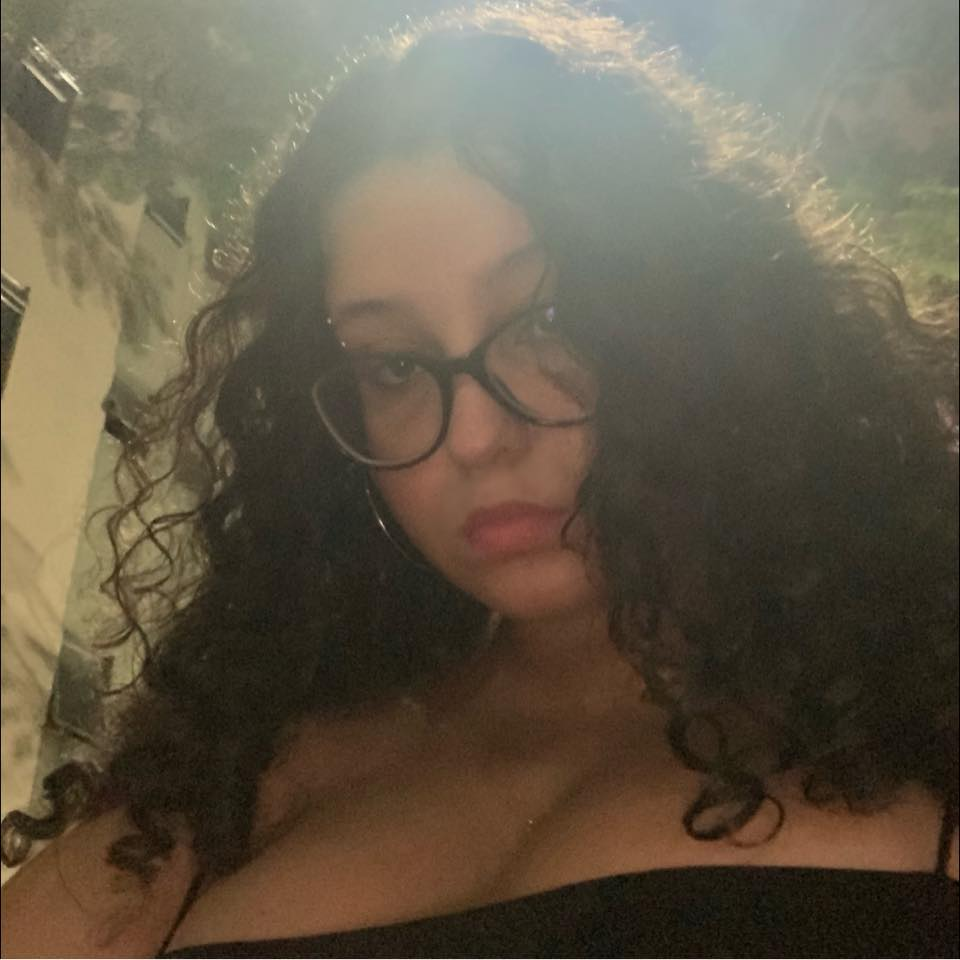
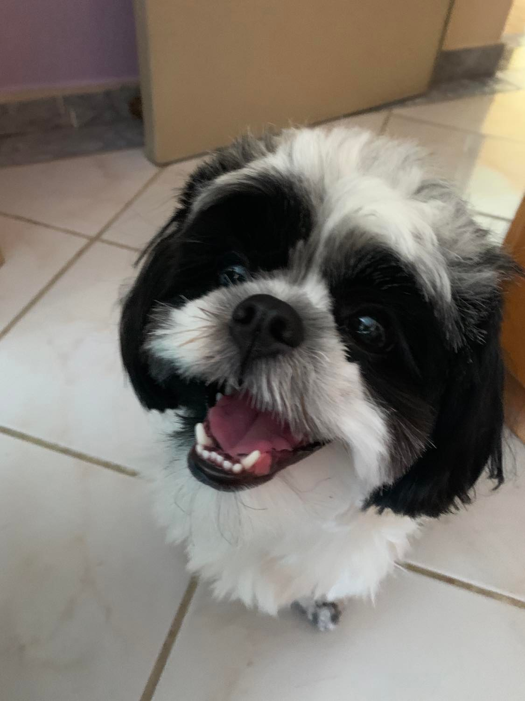

Maria Clara
Aluna de Design Gráfico na Universidade Veiga de Almeida
Jogadora de jogos online na maior parte do tempo, e no outro crítica de animes e séries. Tenho 20 anos e sou apaixonada por artes. Tenho uma cachorrinha chamada Athena e adoro bolo de cenoura.

Essa é a Athena. Uma Shihtzu preta e branca, com 2 anos de idade, que adora tirar sonecas e comer frango. É a melhor cachorrinha do mundo.
